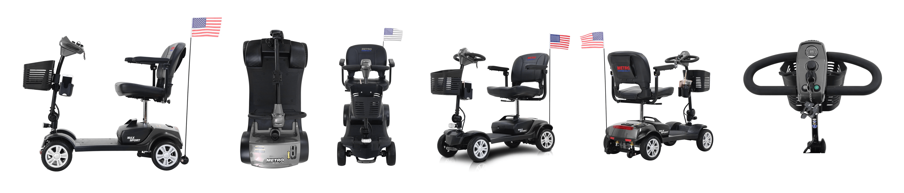
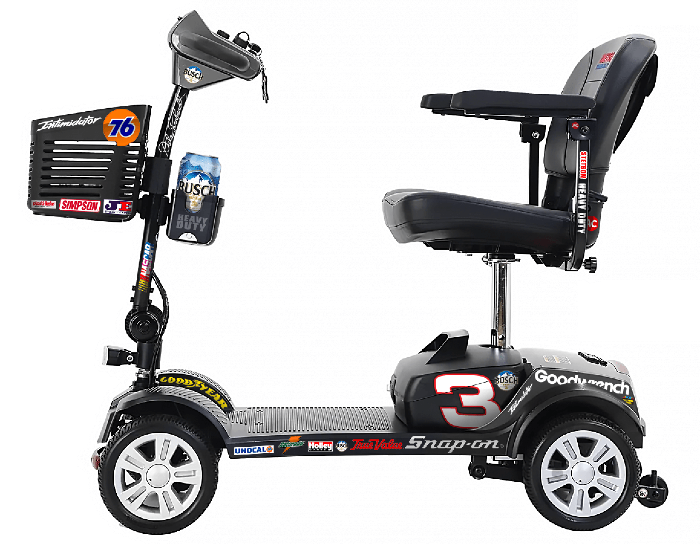

I bought a mobility scooter for my father in law since he's having a hard time getting around lately. Being a stubborn old man, I know he's not gonna take well to something that is supposed to help him. My solution is to attempt transforming the humdrum scooter into a rendition of a black Dale Earnhardt #3 color scheme.
The look I'm after is to emulate one of the 'black' paint schemes from the mid-90s Dale Earnhardt Chevys. After doing a bit of googling, the differences between various races and seasons is not enough to make much of a difference. Also, since the scooter's dimensions are nothing remotely similar to that of a stock car, emulating a specific version would likely be a waste of time and effort. So to keep things simple, I'll just roll with one and create my artwork based on it.
I started off by gathering manufacturer photos that showed as many views as possible. Ideally for vehicle wraps or graphics its nice to have your standard top, side, other side, and back. A perspective angle also gives a good feel for the final product, although it can be more difficult to generate a convincing mockup if you're not using some 3D type software.
It should be noted that this manufacturer did not have easily accessible images from their website. I needed to google chrome inspect the elements to snatch them. Also, they didn't even have all the views, I needed to source other views from thier dealers' websites.
It should also be noted that even after gathering the manufacturer's images, I've noticed a good bit of inconsistency across the photos. Some have fake shadow added, others don't. None of the perspectives line up. The camera was likely in a fixed position but the product moved during the shoot. In one shot, you can clearly see the lightstand and umbrella in the reflection. The images aren't bad, they just aren't good.
After finding my images, I tweaked the colored versions to match the model I ordered.

Searching for most of the sponsor logos was relatively easy, but most are not in vector format. When the scooter arrives, I'll be able to grab hard measurements and will then know of the non-vector bitmap artwork will suffice for the sizes I need.
